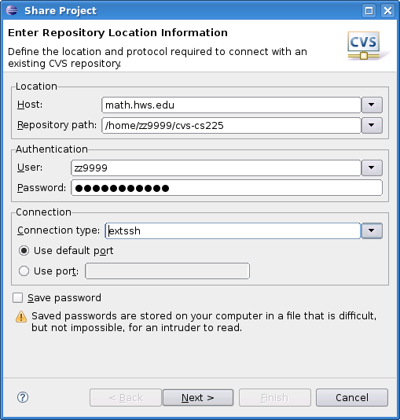
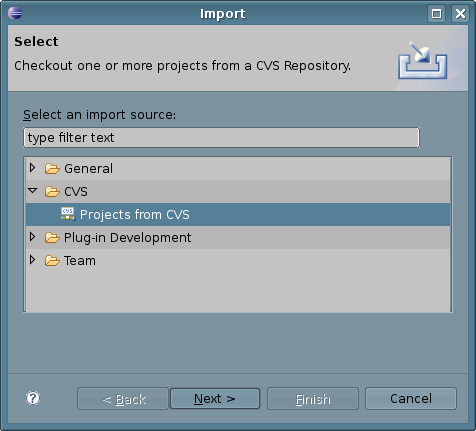
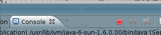
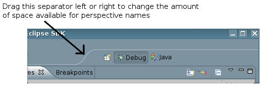

This week's lab will introduce you to two programming tools: The CVS version control system and the Eclipse debugger. The homework for Part 1 of the lab will consist of creating a CVS repository to which I have access and putting a copy of your genetic programming project in that repository. The homework for Part 2 of the lab will be to turn in a written or typed lab report about your experience with the debugger. This work, including your completed genetic programming project, is due by the morning of Thursday, March 26.
Professional programmers need a way of keeping track of changes that they make to a programming project. When several people are working on a project, they also need a way of combining changes made by various individuals in the shared "official" version of the project. Both of these needs can be met by a version control system. One common system is CVS. CVS keeps a record of all versions of every file that is added to a CVS project. It is possible to compare the current version of any file with a previous version. It is possible to retrieve copies of files that have been deleted. It is possible for several programmers to access the same project so that they can all work on it.
CVS, or something like it, is an essential tool for team programming, and it is also useful for individual programmers. Eclipse has excellent support for CVS. I would like you to use it at least for your final project in this course, and you might want to use it for the remaining labs. (Because of certain limitations in CVS, many people have started using a newer system named SVN, or "SubVersion", that is designed as an improved replacement for CVS. Since CVS's limitations won't matter in this course, and since SVN is not part of the version of Eclipse that is installed on our lab machines, we will stick with CVS.)
To use CVS, you need a repository where CVS will store all the information about your projects. The repository is just an ordinary directory, and for this course you can use a directory inside your home directory on the department's file server. I would like you to use a directory named cvs-cs225 for your CVS repository, and I would like to have access to that directory for purposes of grading your work. (It's possible to have as many repositories as you want.)
To create the repository, open a Konsole window and, working in your home directory, enter the following sequence of commands, replacing zz9999 with your own user name:
mkdir cvs-cs225
fs setacl cvs-cs225 -acl eck all
cvs -d /home/zz9999/cvs-cs225 init
The first command makes the directory that will hold your CVS repository. The second line gives me access to that directory. This will allow me to see your projects and test them for purposes of grading. The third command initializes the directory, turning it into a CVS repository.
You only have to give these commands once. From now on, you will only use your CVS repository through Eclipse. You should never directly make any changes to the cvs-cs225 directory or to its contents.
(Note: The fs command works only with the "AFS file system," which is the networked file system where your home directory is stored; the AFS file system turns out to be very convenient for managing access to CVS repositories. If you are working with other people on a project, you can give them all permission to access the repository, but note that you should do this on a newly created directory, before calling cvs init.)
The first thing that you need to understand about CVS is that it keeps a separate copy of your projects, in addition to those that are stored in Eclipse. The copy that is in CVS can be shared by several programmers, and it can be accessed by you from several different Eclipse workspaces and on several different computers. This allows a team of programmers to work on the same project, and it allows you to work on the same project from several different locations. To use CVS, you have to know how to copy projects from Eclipse to CVS and from CVS to Eclipse, and you need to know how to keep the different copies of the project in sync.
Sharing a Project: The first step to start using CVS with an Eclipse project is to "Share" the project, which copies the project into CVS. (You only have to do this once for each project that you want to store in CVS.)
To share your project into CVS, right-click the project name in the Package Explorer view. In the pop-up menu, go to "Team", and select "Share Project" from the Team sub-menu. The first time you share a project, you will have to input information about your CVS repository (which you should have already created, as described above). Fill in the dialog box as shown here, replacing zz9999 with your own user name:

Note that you should use math.hws.edu as the "Host" for your repository location. Your home directory, where the repository is located, is accessible on any of the department's computers; math.hws.edu is one of those computers, and it is accessible from off-campus as well as on. Be sure to set the "Connection type" to extssh. You can check the "Save Password" box or not, as you prefer.
When you have filled in all the information, click "Next". On the next screen, you can accept the default setting, "Use project name as module name", and click "Next" again. (The "module name" is the name for the information about your project that is stored in the CVS repository. It does not necessarily need to be the same as the name of the project in Eclipse, but using the same name will avoid confusion.) On the next screen, you can just click "Finish." This will create a "module" in CVS to hold a copy or your project -- but the files from the project still need to be copied into the CVS module.
After you click "Finish" in the "Share Project" dialog, the "Commit Files" dialog will pop up. The same "Commit" dialog will also appear later, when you copy new or modified files to CVS. This dialog box tells you which files are being saved or modified in CVS, and it has a space where you can enter a comment that describes the changes. Enter a comment such as "Initial commit" if you want, and click "Finish". Your files will be copied into CVS.
You should use this process to Share your genetic programming project into your CVS repository.
Importing a Project: Let's say that you want to work on your project on another computer, such as your personal computer in your dorm room. (You will not have to do this to complete this lab!) To do that, you can run Eclipse on that computer and import the project from CVS. This will copy the project from CVS into Eclipse. To import a project into an Eclipse workspace, right-click in the Package Explorer view and select "Import" from the pop-up menu. In the "Import" dialog box, select "Projects from CVS", as shown here:

Click "Next". If this is the first time you are using CVS in this workspace. you will have to set up CVS repository information, as described above. Once you've done that (or selected an existing repository), click "Next" again. On the next screen, you have to enter the name of the CVS module that you want to import. This is the same name that you used when you "Shared" the project. After filling in or selecting the module, click "Finish". This will copy the project from CVS into Eclipse.
Commit and Update: Once you have a CVS module associated with an Eclipse project (either by Sharing or Importing), there are two things that you need to do to work with CVS. First of all, after you make any changes in the Eclipse project, you will want to copy those changes into CVS. This is called committing the changes. As you make changes in your Eclipse project, you will note that any resources that you modify are marked with a ">" in the "Project Explorer." This is to remind you that the changes need to be committed to CVS. To commit them, right-click on the project name in the "Package Explorer". In the popup menu, go to "Team", then select "Commit" from the next popup. You will see the Commit dialog window, where you can enter a comment to describe the changes that you have made, if you want. You should try this by making a change in your genetic algorithms project and committing it to CVS.
Now, suppose that you are working with other people on a project, or that you work on the project from several computers. The remaining question is, how will the changes that are committed from one Eclipse workspace get into other Eclipse workspaces? For this, you need the update command. When changes (might) have been made to a CVS module from one Eclipse workspace and you want to get those changes into another Eclipse Workspace, just right-click the project name in the second workspace and select "Update" from the "Team" sub-menu.
To summarize, there are four basic things that you can do with CVS in Eclipse:
If you are using CVS only for backup from a single Eclipse workspace, you will only need the "Share" and "Commit" operations.
Sharing and importing are things that are done only once (for a given project). If you are using CVS, you should always remember to commit your changes before quitting Eclipse. If you work on your project from more than one Eclipse workspace, you should update your project before you start working on it, to make sure that you will be working on the most current version. Remember that changes that you make in Eclipse don't automatically get into CVS; you have to commit them. And changes that are committed to CVS don't automatically get into other Eclipse workspaces; you have to do an update to get the changes.
(Note: If you try to commit conflicting changes to a CVS module, bad things will happen. Conflicting changes are multiple changes made by different committers to the same lines in the same file. The conflicts must be "resolved" before the changes can be successfully committed, and that can get messy. You should try to avoid this by making sure that you know who is working on what parts of the project.)
The directory /classes/s09/cs225 contains the file BuggySearchAndSort.java. Copy this file into an Eclipse project.
BuggySearchAndSort defines a search subroutine that is supposed to check whether or not a given integer occurs in a given array of integers. It also contains three different sorting subroutines that are supposed to be able to sort an array of integers into non-decreasing order. There is also a main program that tests the four subroutines (along with a sorting subroutine from one of Java's standard classes that is there to remind you that you don't necessarily need to write your own subroutines to perform common tasks).
If all the subroutines that are defined in BuggySearchAndSort were correct, then running the program would produce output that looks something like this:
The array is: 4 3 6 9 3 9 5 4 1 9
This array DOES contain 5.
Sorted by Arrays.sort(): 1 3 3 4 4 5 6 9 9 9
Sorted by Sweep Sort: 1 3 3 4 4 5 6 9 9 9
Sorted by Selection Sort: 1 3 3 4 4 5 6 9 9 9
Sorted by Insertion Sort: 1 3 3 4 4 5 6 9 9 9
Unfortunately (or fortunately, for the purposes of this lab), each of the four subroutines in BuggySearchAndSort has a bug that can either produce incorrect results or an infinite loop. If you run the buggy program without modifying it, it will go into an infinite loop. Remember that to stop a running program in Eclipse, you can click the Stop button that looks like a small red square in the part of the window where the Console view appears:

(If this button is gray instead of red, it means that no program is currently running in the visible console. However, there might be other consoles that are still running programs; to avoid having a bunch of programs, all running in infinite loops at the same time, you should make sure that a program has been terminated before starting another program run.)
Your job in this lab is to use the Eclipse debugger to find each of the four bugs. In the written lab report that you will turn in, you should describe each bug, say how you fixed it, and explain briefly how you used the Eclipse debugger to find the bug.
(Note: It's possible that you could find some or all of the bugs just by inspecting the code. However, the main purpose of this part of the lab is to get some experience with the debugger, so I would like you to do that rather than simply eyeball the code!)
To debug a program in Java, you have to start the program using a "Debug" command instead of a "Run" command. There is a "Debug As..." command in the same pop-up menu as the "Run As..." command. You can also click the "Debug" button to debug the program that you have run or debugged most recently. The "Debug" button is just to the left of the "Run" button in the toolbar, and it looks like a bug:
The main point of the debugger is that it allows you to pause the execution of a program and inspect the values of variables. Once the program has been paused, you can also step through the program line-by-line to see what is going on. The program will not pause, however, unless you have added a breakpoint to the program source code. If you run a program that has no breakpoints under the debugger, it behaves just as it would if it were run normally.
To add a breakpoint, simply double-click in the left margin of the source code, next to one of the lines of code. (By left margin, I mean the same part of the window where the error and warning "light bulbs" appear.) The breakpoint appears as a small dot: . You can remove the breakpoint by double-clicking this dot. There is also a "Remove All Breakpoints" command in the "Run" menu. I should also note that you can use the "Add Java Exception Breakpoint" command in the "Run" menu to set up a breakpoint that is triggered whenever an exception of a given type occurs.
When a program is running in Eclipse under the debugger, and the execution gets to a line that contains a breakpoint, the execution is paused. If Eclipse is showing the regular Java perspective when this happens, Eclipse will want to switch to the Debug perspective -- another screen full of views (or panes) that are useful for debugging. The first time this happens, Eclipse will put up a dialog box that asks whether you want to switch to the Debug perspective. I suggest that you check the box that says "Remember my decision" and say "Yes".
Debugging is complicated, and so is Java's Debug perspective. The most important view is the "Variables" view in the top-right corner. Here, you can inspect the values of variables. An array or object variable has a small triangle next to its name; you can click this triangle to open and close the variable so that you can inspect its contents. If a variable is selected (by clicking it), its value is also shown at the bottom of the view.
The "Debug" view in the top right contains a list of currently active subroutines. Click on a subroutine to inspect its variables. The title bar of the "Debug" view contains some useful buttons:
The green triangle means "Resume" and can be used to resume normal execution of the program (until it next encounters a breakpoint). There is a red "Stop" button that can be used to terminate the program. Most important are the three "arrow" buttons for the "Step Into", "Step Over", and "Step Out" commands. "Step Over" is easiest to understand -- clicking it causes one line of code to be executed. "Step In" is similar, except that if the line of code contains a subroutine call, it takes you to the first line of the subroutine so that you can continue from there. "Step Out" continues execution until the current subroutine returns, and it stops at the line to which the subroutine returns. Note that these "Step" commands can also be found in the "Run" menu, and that the F5, F6, and F7 keys can be used as keyboard equivalents for the step commands.
In the left center area of the Debug perspective, you'll find an edit view where the source code files for the program are displayed. The current line is marked in this view with an arrow in the left margin, and you can watch this arrow move as you step through the program. You can even edit your program in the Debug perspective.
One final remark: There is a list of open perspectives on the right end of the toolbar at the top of the Eclipse window. You can move from one perspective to another by clicking on the name of one of the perspectives in this list. So, when you want to get out of the Debug perspective and back to the normal Java perspective, just click "Java" in the list of perspectives:
